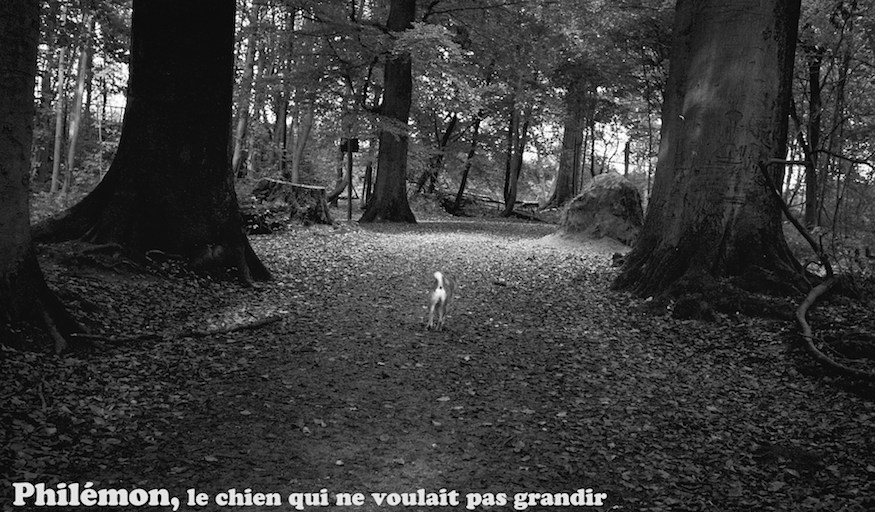
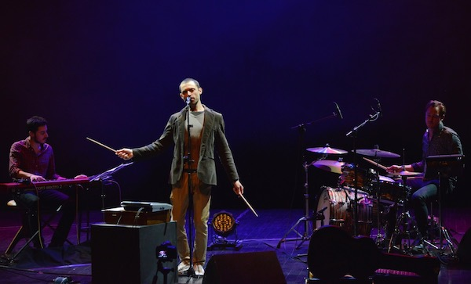

easy pieces
membres
Benjamin Sauzereau: guitare
Hendrik Lasure: fender rhodes
Dorian Dumont: piano
Easy Pieces est un trio qui explore la rencontre de sons acoustiques et amplifiés, autour de morceaux originaux écris pour cette instrumentation inhabituelle. Le groupe travaille sur les unissons, alterne les ambiances, alliant des soundscapes vertigineux et des mélodies ciselées, une écriture épurée avec une dimension improvisée, toujours au service d'une collection de petits récits instrumentaux qui suggère des histoires mais laisse à l'auditeur le soin de les imaginer.
Ces trois jeunes musiciens ont su trouver chez chacun une profonde compréhension mutuelle au cours d'une série de concerts, et jouent avec les codes du trio où ces trois instruments harmonique se passent les fonctions, s'entremêlent et s'affrontent avec une énergie tantôt rock tantôt abstraite et toujours narrative.
Easy Pieces vient d’enregistrer son 1er album qui devrait sortir à l’automne 2017.
Ce que j'aime avec EASY PIECES c'est que j'ai parfois l'impression d'être seulement un effet de l'un de des deux autres musiciens
Comme si je me rétrécissais et que je devenais un tout petit rouage, comme l'enjoliveur d'une voiture.
Et que si j'ai envie je peux aussi prendre le volant et que c'est confortable.
Et d'un coup je conduit une Ferrari.
La 'lumière' de l'histoire musicale se projète sur tous les trois à la fois souvent, sur l'un de nous parfois, ou encore tel une ombre sur aucun d'entre nous et jouant seulement avec les reflets.
Tour à tour je prends le pouvoir, je me fonds dans une note, une idée, un son, j'accompagne, je bataille, je soutiens, je compose...
Bref je joue tout simplement.
Mettez vous l’eau à la bouche:
Ce groupe vous intrigue ? Tu veux désespérément en savoir plus et connaître les arcanes de cette formation ? L’alternance entre le tutoiement et le vouvoiement vous perturbe bien comme il faut et tu ne sais plus où tu en es ? D’ailleurs : où en êtes-vous ? Tu veux acheter un disque ? Tu n’en peux plus de toutes ces questions ? Tout ça est très tourneboulant n’est-ce pas ? Ke-waaa? Tu veux des détails sur les concerts à venir? Va donc sur leur site internet:
Et bien ils ne possèdent malheureusement pas encore de site donc tu vas devoir être patient.
C’est comme ça mais c’est en préparation
Relax et prends une tisane.
Philemon, le chien qui ne voulait pas grandir

membres
Benjamin Sauzereau: guitare
Mathieu Robert: sax soprano
Dorian Dumont: piano
Benoît Leseure: violon
Nicole Miller: alto
Annemie Osborne: violoncelle
PHILÉMON est un sextet qui s’attache à une forme de chanson instrumentale, tout en exploitant certains codes du jazz et de la musique de chambre comme de la musique contemporaine.
"Résolument acoustique et tourné vers la simplicité, le groupe joue uniquement de la musique originale, arrangée pour et par ses membres, qui surprend doucement par un univers poétique très particulier.
1 album existant:
Mettez vous l’eau à la bouche:
Ce groupe vous intrigue ? Tu veux désespérément en savoir plus et connaître les arcanes de cette formation ? L’alternance entre le tutoiement et le vouvoiement vous perturbe bien comme il faut et tu ne sais plus où tu en es ? D’ailleurs : où en êtes-vous ? Tu veux acheter un disque ? Tu n’en peux plus de toutes ces questions ? Tout ça est très tourneboulant n’est-ce pas ? Ke-waaa? Tu veux des détails sur les concerts à venir? Va donc sur
leur site internet.
Jens Maurits Orchestra: The Blogpera

membres
Jens Bouttery: batterie
Dorian Dumont: piano
Lucas Kramer: 'la bestia'
Daan Milius: dramaturge
Pourquoi faisons nous de la musique?
C’est la question qui a conduit le « Jens Maurits Orchestra » à interviewer des scientifiques, à enquêter sur des mythes tribaux, à construire une machine à mémoire : « la bestia » ainsi qu’à faire beaucoup de musique du coup.
Comme quoi il n’y a pas de secret.
Cette question infini, cette recherche sans fin, (tel « l’histoire ». Ah! Falkor!) vous ait maintenant présenté sous la forme du « BLOGPERA » : un super BLOG interactif dans lequel les spectateurs doivent choisir quel « aria » sera joué et quand et lesquels ne seront pas joués du tout.
Comme quoi il n’y a pas de secret.
2 albums existants:
Mettez vous l’eau à la bouche:
un audio: https://soundcloud.com/jensbouttery/jens-maurits-orchestra-on-the-blogpera-by-leonie-reineke
& une video: https://www.youtube.com/watch?v=MK0clRHqmwk&t=6s
Ce groupe vous intrigue ? Tu veux désespérément en savoir plus et connaître les arcanes de cette formation ? L’alternance entre le tutoiement et le vouvoiement vous perturbe bien comme il faut et tu ne sais plus où tu en es ? D’ailleurs : où en êtes-vous ? Tu veux acheter un disque ? Tu n’en peux plus de toutes ces questions ? Tout ça est très tourneboulant n’est-ce pas ? Ke-waaa? Tu veux des détails sur les concerts à venir? Va donc sur leur site internet:
TO SITE
Blue Monday People

membres
Franois Vaiana: chant
Wendlavim Zabsonre: batterie
Dorian Dumont: piano
Benjamin Sauzereau: guitare
Blue Monday people est un groupe de Soul progressive de Bruxelles fondé par le chanteur François Vaiana. Leur musique hybride est teinté de spleen Européen et imprégné de blues d’Amérique. Les compositions de François sont des contes urbains profondément influencé par le bon, le vilain, le sauvage et l’ordinaire.
1 album & 1 EP existants:
Mettez vous l’eau à la bouche:
Ce groupe vous intrigue ? Tu veux désespérément en savoir plus et connaître les arcanes de cette formation ? L’alternance entre le tutoiement et le vouvoiement vous perturbe bien comme il faut et tu ne sais plus où tu en es ? D’ailleurs : où en êtes-vous ? Tu veux acheter un disque ? Tu n’en peux plus de toutes ces questions ? Tout ça est très tourneboulant n’est-ce pas ? Ke-waaa? Tu veux des détails sur les concerts à venir? Va donc sur leur site internet:
TO SITE
echt
membres
Florent Jeunieaux: guitare
Martin Méreau: batterie
Dorian Dumont: piano
Federico Pecoraro: basse
SubChak est un groupe composé de 4 Zinneke Bruxellois.
Leur style (parce qu’ils en ont) est très clair : c’est du pur Groove-Electro-Trip-Hop mélangeant le brut, le vilain, le libre, l’audacieux et le transcendant.
Tel une oeuvre de Georges Braque (j’ai googlé ce nom et c’est un pote à Picasso) ils utilisent des collages musicaux et leur set s’enchaîne à la manière d’un DJ entre leurs 8 mains habiles.
Le tout est une très bonne occasion de venir bouger ta tête et de te sentir en joie, « enjaillé » comme dirait l’autre, et de faire la fête avec tes pieds.
Avec Martin Méreau à la batterie et à la mèche, Dorian Dumont aux claviers et au rebond, Florent Jeunieaux à la guitare et aux couleurs et Federico Pecoraro à la basse et à l’accent.
???????????
Mettez vous l’eau à la bouche:
Ce groupe vous intrigue ? Tu veux désespérément en savoir plus et connaître les arcanes de cette formation ? L’alternance entre le tutoiement et le vouvoiement vous perturbe bien comme il faut et tu ne sais plus où tu en es ? D’ailleurs : où en êtes-vous ? Tu veux acheter un disque ? Tu n’en peux plus de toutes ces questions ? Tout ça est très tourneboulant n’est-ce pas ? Ke-waaa? Tu veux des détails sur les concerts à venir? Va donc sur leur site internet:NO SITE
Et bien ils ne possèdent malheureusement pas encore de site donc tu vas devoir être patient.
C’est comme ça mais c’est en préparation
Relax et prends une tisane.
Effdé

membres
Fabrice Ducognon: chant
Dorian Dumont: piano
Romain Castéra: batterie
Après 15 années de nomadisme musical, consacrées à étudier le langage du jazz et s’imprégner des musiques du monde , Effdé revient en 2016 à ses amours de jeunesse : la chanson , le folk, et la pop musique.
Dans « Fendillés », son premier Ep sous ce nom, percent ça et là les couleurs et les formes ramenées des ces différents voyages. Dans cet espace musical moderne s’harmonisent les échos d’un Bashung de « L’Imprudence », les progressions harmoniques d’un Esbjorn Svenson Trio ou l’existentialisme d’un Léonard Cohen.
L’écriture y tient le devant de la scène : elle interroge les mots, la langue, sa polysémie, sa musique. Elle raconte le vieillissement, l’engagement, l’utopie, un pied dans notre actualité, un autre dans ce qui fonde depuis toujours l’expérience envoûtante et déstabilisante d’être au monde.
Entouré de compagnons de longue date, avec en premier chef Rom Castéra ( batterie ) qui réalise et produit ce premier opus, Dorian Dumont (piano) , Charlie Huck ( contrebasse ), le trio Zéphyr ( trio à cordes ), ainsi que la chanteuse Lola Baï, en featuring sur un titre, Effdé dévoile une vision de la chanson qui s’engage- à questionner nos vies, à rester alerte, à croire en l’homme, à croire, enfin, que la beauté est bien plus qu’un simple divertissement du réél.
1 EP existant:
Mettez vous l’eau à la bouche:
un audio: https://www.youtube.com/watch?v=2MjXuOrHtlo
& une video: http://xn--effd-epa.com/musique
Ce groupe vous intrigue ? Tu veux désespérément en savoir plus et connaître les arcanes de cette formation ? L’alternance entre le tutoiement et le vouvoiement vous perturbe bien comme il faut et tu ne sais plus où tu en es ? D’ailleurs : où en êtes-vous ? Tu veux acheter un disque ? Tu n’en peux plus de toutes ces questions ? Tout ça est très tourneboulant n’est-ce pas ? Ke-waaa? Tu veux des détails sur les concerts à venir? Va donc sur leur site internet:
TO SITE
Charlotte Haesen Quintet
membres
Charlotte Haesen: chant
Philip Breidenbach: guitare
Dorian Dumont: piano
Fil Caporali: contrebasse
Samuel Reisen: batterie
Les influences de la chanteuse hollando-franco-burundaise sont aussi éclectiques que ses origines. Ses oreilles se sont laissées séduire par des voix et des personnalités hors norme telles que Björk, Peggy Lee, Fay Claassen ou encore Joni Mitchell.
Six ans après la sortie de son premier album, la chanteuse Charlotte Haesen remonte un troisième projet rêveur et apaisant aux accents jazz et singer-songwriting. Sur Hibernation, le nouvel EP du quintet, la voix cristalline de Charlotte Haesen résonne avec plus de liberté que jamais tout en gardant l'empreinte de son univers très personnel.
Le nouvel EP « Hibernation » est sortie en Avril 2017.
1 album existant:
Mettez vous l’eau à la bouche:
un audio: https://soundcloud.com/charlottehaesen/you-against-me-charlotte
& une video: https://www.youtube.com/watch?v=vIR-ORe7ujc
Ce groupe vous intrigue ? Tu veux désespérément en savoir plus et connaître les arcanes de cette formation ? L’alternance entre le tutoiement et le vouvoiement vous perturbe bien comme il faut et tu ne sais plus où tu en es ? D’ailleurs : où en êtes-vous ? Tu veux acheter un disque ? Tu n’en peux plus de toutes ces questions ? Tout ça est très tourneboulant n’est-ce pas ? Ke-waaa? Tu veux des détails sur les concerts à venir? Va donc sur leur site internet:
TO SITE
9+1
membres
Tom Bourgeois: saxophones
Florent Jeunieaux: guitare
Dorian Dumontpiano:
Thomas Mayade: trompette
Julien Delbrouck: sax baryton/clarinette basse
Quinten de Craecker: trombone
Thibault Dille: accordéon
Esinam Dogbaste: flûte/cajón
Victor Foulon: contrebasse
Jelle van Giel: batterie
9+1 est le projet de Tom Bourgeois.
Et c’est beau.
???????????
Mettez vous l’eau à la bouche:
un audio: https://soundcloud.com/tombourgeoismusic/05-soir-29-recital-mim-2015
& une video: https://www.youtube.com/watch?v=TrS5phNt5OE
Ce groupe vous intrigue ? Tu veux désespérément en savoir plus et connaître les arcanes de cette formation ? L’alternance entre le tutoiement et le vouvoiement vous perturbe bien comme il faut et tu ne sais plus où tu en es ? D’ailleurs : où en êtes-vous ? Tu veux acheter un disque ? Tu n’en peux plus de toutes ces questions ? Tout ça est très tourneboulant n’est-ce pas ? Ke-waaa? Tu veux des détails sur les concerts à venir? Va donc sur leur site internet:
TO SITE